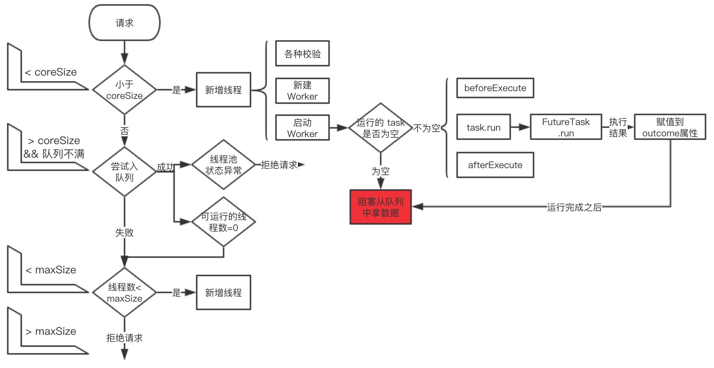
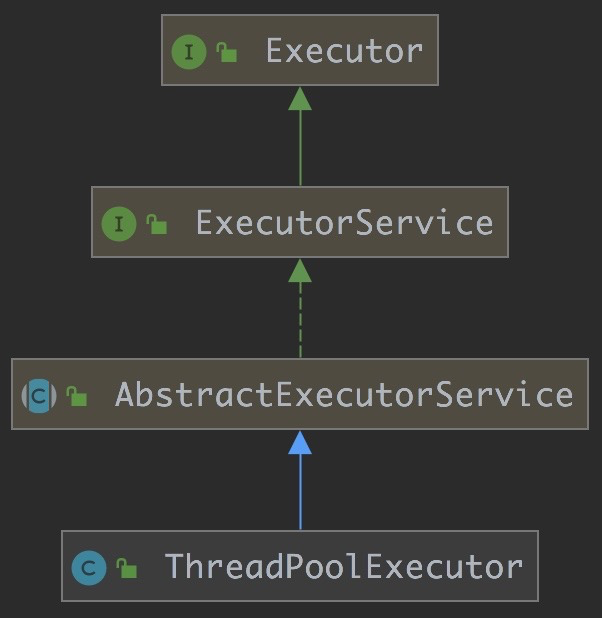
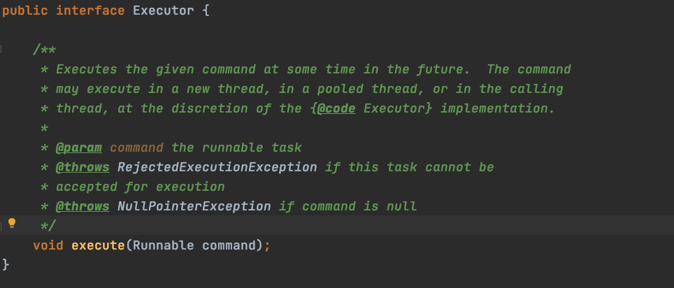
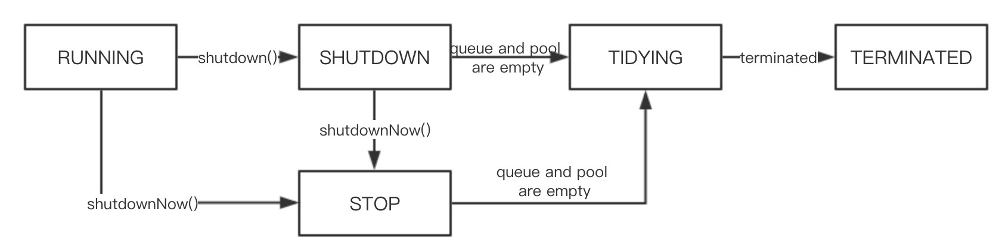
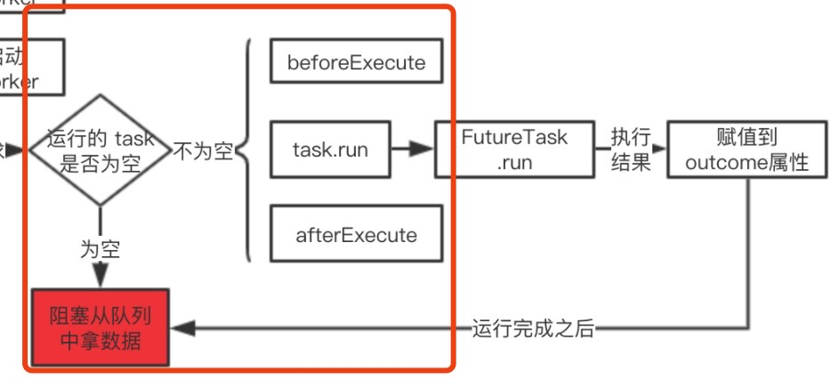
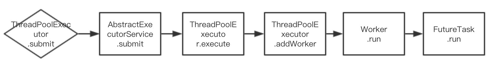
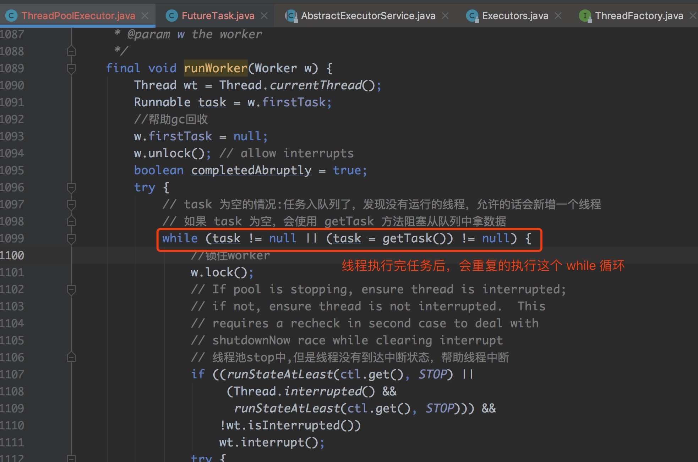

整体架构图

类结构
首先我们来看一下 ThreadPoolExecutor 的类结构，如下图：

接下来我们大概的看下这几个类的大概 含义：
Executor：定义 execute 方法来执行任务，入参是 Runnable，无出参：

ExecutorService：Executor 的功能太弱，ExecutorService 丰富了对任务的执行和管理 的功能，主要代码如下：
1
2
3
4
5
6
7
8
9
10
11
12
13
14
15
16
17
18
19
20
21
22
23
24
25
26
27
28
29
30
31
32
33
34
35
36
37
38
39
40public interface ExecutorService extends Executor {
// 关闭，不会接受新的任务，也不会等待未完成的任务
// 如果需要等待未完成的任务，可以使用 awaitTermination 方法
void shutdown();
// 试图关闭所有正在执行的任务，返回等待执行的任务列表
List<Runnable> shutdownNow();
// 所有的任务是否都已经终止，是的话，返回 true
boolean isTerminated();
// 在超时时间内阻塞，等待所有的任务执行完成
boolean awaitTermination(long timeout, TimeUnit unit)
throws InterruptedException;
// 提交有返回值的任务，使用 get 方法可以阻塞等待任务的结果返回
<T> Future<T> submit(Callable<T> task);
<T> Future<T> submit(Runnable task, T result);
// 提交没有返回值的任务
// 任务执行完成之后，返回 null 值
Future<?> submit(Runnable task);
// 给定任务集合，返回已经执行完成的 Future 集合，每个返回的 Future 都是 isDone = true 的状态
<T> List<Future<T>> invokeAll(Collection<? extends Callable<T>> tasks)
throws InterruptedException;
<T> List<Future<T>> invokeAll(Collection<? extends Callable<T>> tasks,
long timeout, TimeUnit unit)
throws InterruptedException;
// 给定任务中有一个执行成功就返回，如果抛异常，其余未完成的任务将被取消
<T> T invokeAny(Collection<? extends Callable<T>> tasks)
throws InterruptedException, ExecutionException;
<T> T invokeAny(Collection<? extends Callable<T>> tasks,
long timeout, TimeUnit unit)
throws InterruptedException, ExecutionException, TimeoutException;
}AbstractExecutorService 是一个抽象类，封装了 Executor 的很多通用功能，比如：
1
2
3
4
5
6
7
8
9
10
11
12
13
14
15
16
17
18
19
20
21
22
23
24// 把 Runnable 转化成 RunnableFuture
// RunnableFuture 是一个接口，实现了 Runnable 和 Future
// FutureTask 是 RunnableFuture 的实现类，主要是对任务进行各种管理
protected <T> RunnableFuture<T> newTaskFor(Runnable runnable, T value) {
return new FutureTask<T>(runnable, value);
}
public Future<?> submit(Runnable task) {
if (task == null) throw new NullPointerException();
RunnableFuture<Void> ftask = newTaskFor(task, null);
execute(ftask);
return ftask;
}
public <T> Future<T> submit(Runnable task, T result) {
if (task == null) throw new NullPointerException();
RunnableFuture<T> ftask = newTaskFor(task, result);
execute(ftask);
return ftask;
}
public <T> Future<T> submit(Callable<T> task) {
if (task == null) throw new NullPointerException();
RunnableFuture<T> ftask = newTaskFor(task);
execute(ftask);
return ftask;
}
有几个点需要注意下：
FutureTask 其本身就是一个任务，而且具备对任务管理的功能，比 如可以通过 get 方法拿到任务的执行结果；
submit 方法是我们平时使用线程池时提交任务的方法，支持 Runable 和 Callable 两种任 务的提交，方法中 execute 方法是其子类 ThreadPoolExecutor 实现的，不管是那种任 务入参，execute 方法最终执行的任务都是 FutureTask；
ThreadPoolExecutor 继承了 AbstractExecutorService 抽象类，具备以上三个类的所有 功能。
类注释
ThreadPoolExecutor 的类注释有很多，我们选取关键的注释如下：
- ExecutorService 使用线程池中的线程执行提交的任务，线程池我们可以使用 Executors 进行配置
线程池解决两个问题：1：通过减少任务间的调度开销 (主要是通过线程池中的线程被重复 使用的方式)，来提高大量任务时的执行性能；2：提供了一种方式来管理线程和消费，维 护基本数据统计等工作，比如统计已完成的任务数；
Executors 为常用的场景设定了可直接初始化线程池的方法，比如 Executors#newCachedThreadPool 无界的线程池，并且可以自动回收； Executors#newFixedThreadPool 固定大小线程池； Executors#newSingleThreadExecutor 单个线程的线程池；
- 为了在各种上下文中使用线程池，线程池提供可供扩展的参数设置：1：coreSize：当新 任务提交时，发现运行的线程数小于 coreSize，一个新的线程将被创建，即使这时候其它 工作线程是空闲的，可以通过 getCorePoolSize 方法获得 coreSize；2：maxSize: 当任 务提交时，coreSize < 运行线程数 <= maxSize，但队列没有满时，任务提交到队列中， 如果队列满了，在 maxSize 允许的范围内新建线程；
- 一般来说，coreSize 和 maxSize 在线程池初始化时就已经设定了，但我们也可以通过 setCorePoolSize、setMaximumPoolSize 方法动态的修改这两个值；
- 默认的，core threads 需要到任务提交后才创建的，但我们可以分别使用 prestartCoreThread、prestartAllCoreThreads 两个方法来提前创建一个、所有的 core threads；
- 新的线程被默认 ThreadFactory 创建时，优先级会被限制成 NORM_PRIORITY，默认会 被设置成非守护线程，这个和新建线程的继承是不同的；
- Keep-alive times 参数的作用：1：如果当前线程池中有超过 coreSize 的线程；2：并且 线程空闲的时间超过 keepAliveTime，当前线程就会被回收，这样可以避免线程没有被使 用时的资源浪费；
- 通过 setKeepAliveTime 方法可以动态的设置 keepAliveTime 的值；
- 如果设置 allowCoreThreadTimeOut 为 ture 的话，core thread 空闲时间超过 keepAliveTime 的话，也会被回收；
- 线程池新建时，有多种队列可供选择，比如：1：SynchronousQueue，为了避免任务被 拒绝，要求线程池的 maxSize 无界，缺点是当任务提交的速度超过消费的速度时，可能 出现无限制的线程增长；2：LinkedBlockingQueue，无界队列，未消费的任务可以在队 列中等待；3：ArrayBlockingQueue，有界队列，可以防止资源被耗尽；
- 队列的维护：提供了 getQueue () 方法方便我们进行监控和调试，严禁用于其他目的， remove 和 purge 两个方法可以对队列中的元素进行操作；
- 在 Executor 已经关闭或对最大线程和最大队列都使用饱和时，可以使用 RejectedExecutionHandler 类进行异常捕捉，有如下四种处理策略： ThreadPoolExecutor.AbortPolicy、ThreadPoolExecutor.DiscardPolicy、 ThreadPoolExecutor.CallerRunsPolicy、ThreadPoolExecutor.DiscardOldestPolicy；
- 线程池提供了很多可供扩展的钩子函数，比如有：1：提供在每个任务执行之前 beforeExecute 和执行之后 afterExecute 的钩子方法，主要用于操作执行环境，比如初 始化 ThreadLocals、收集统计数据、添加日志条目等；2: 如果在执行器执行完成之后想 干一些事情，可以实现 terminated 方法，如果钩子方法执行时发生异常，工作线程可能 会失败并立即终止。
可以看到 ThreadPoolExecutor 的注释是非常多的，也是非常重要的，我们很多面试的题目， 在注释上都能找到答案。
ThreadPoolExecutor 重要属性
接下来我们来看一看 ThreadPoolExecutor 都有哪些重要属性，如下：
1 | //ctl 线程池状态控制字段，由两部分组成： |

Worker 我们可以理解成线程池中任务运行的最小单元，Worker 的大致结构如下：
1 | // 维护着运行中的任务的线程锁和可中断状态 |
理解 Worker 非常关键，主要有以下几点：
Worker 很像是任务的代理，在线程池中，最小的执行单位就是 Worker，所以 Worker 实现了 Runnable 接口，实现了 run 方法；
在 Worker 初始化时 this.thread = getThreadFactory ().newThread (this) 这行代码比 较关键，它把当前 Worker 作为线程的构造器入参，我们在后续的实现中会发现这样的代 码：Thread t = w.thread;t.start ()，此时的 w 是 Worker 的引用申明，此处 t.start 实际 上执行的就是 Worker 的 run 方法；
Worker 本身也实现了 AQS，所以其本身也是一个锁，其在执行任务的时候，会锁住自 己，任务执行完成之后，会释放自己。
线程池的任务提交
线程池的任务提交从 submit 方法说起，submit 方法是 AbstractExecutorService 抽象类定义 的，主要做了两件事情：
把 Runnable 和 Callable 都转化成 FutureTask，这个我们之前看过源码了；
使用 execute 方法执行 FutureTask。
execute方法
execute 方法是 ThreadPoolExecutor 中的方法，源码如下：
1 | public void execute(Runnable command) { |
execute 方法执行的就是整体架构图的左半边的逻辑， 其中多次调用 addWorker 方法， addWorker 方法的作用是新建一个 Worker，我们一起来看下源码：
addWorker方法
1 | // 结合线程池的情况看是否可以添加新的 worker |
addWorker 方法首先是执行了一堆校验，然后使用 new Worker (firstTask) 新建了 Worker， 最后使用 t.start () 执行 Worker，上文我们说了 Worker 在初始化时的关键代码：this.thread = getThreadFactory ().newThread (this)， Worker（this） 是作为新建线程的构造器入参 的，所以 t.start () 会执行到 Worker 的 run 方法上，源码如下：
1 | public void run() { runWorker(this); } |
runWorker方法
runWorker 方法是非常重要的方法，我们一起看下源码实现：
1 | final void runWorker(Worker w) { |

我们聚焦一下这行代码：task.run () 此时的 task 是什么呢？此时的 task 是 FutureTask 类， 所以我们继续追索到 FutureTask 类的 run 方法的源码，如下：
1 | /** |
run 方法中有两行关键代码：
result = c.call () 这行代码是真正执行业务代码的地方；
set (result) 这里是给 outCome 赋值，这样 Future.get 方法执行时，就可以从 outCome 中拿值，这个我们之前我们有说 到。
至此，submit 方法就执行完成了，整体流程比较复杂，我们画一个图释义一下任务提交执行的 主流程

线程执行第一个任务之后
线程执行完任务之后，是消亡还是干什么呢？这是一个值得思考的问题，我们可以从源码中找到 答案， 从 ThreadPoolExecutor 的 runWorker 方法中，我们截图释义一下：

这个 while 循环有个 getTask 方法，getTask 的主要作用是阻塞从队列中拿任务出来，如果队 列中有任务，那么就可以拿出来执行，如果队列中没有任务，这个线程会一直阻塞到有任务为止 （或者超时阻塞），下面我们一起来看下 getTask 方法，源码如下：
1 | // 从阻塞队列中拿任务 |
代码有两处关键：
- 使用队列的 poll 或 take 方法从队列中拿数据，根据队列的特性，队列中有任务可以返 回，队列中无任务会阻塞；
- 方法中的第二个 if 判断，说的是在满足一定条件下（条件看注释），会减少空闲的线程， 减少的手段是使可用线程数减一，并且直接 return，直接 return 后，该线程就执行结束 了，JVM 会自动回收该线程。
总结
这次主要以 submit 方法为主线阐述了 ThreadPoolExecutor 的整体架构和底层源码，只要 有队列和线程的基础知识的话， 理解 ThreadPoolExecutor 并不复杂。 ThreadPoolExecutor 还有一些其他的源码，比如说拒绝请求的策略、得到各种属性、设置各种属性等等方法，这些方 法都比较简单，感兴趣的可以再研究。

...
...
This is copyright.